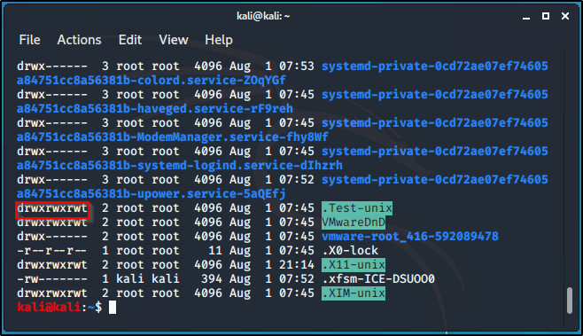

When the command ls -la, brings up all files (including the hidden ones). Here is what certain characters represent:
- : means it's a file.
d : directory.
rwx : read, write, execute. It's the permision setings that a particular file has.This is where owners can read, write and execute files.
r -x : read and execute files only, for group users.
r -x : users can only read and execute.
There are three stages of privileges when the li -la command is executed.The above characters, would tell the level of privileges given.
the first is for the owner, the second is for group users, and the third is for basic users. In a case where a file is all rwx (read, write, execute) on all stages, it'll look like this: drwxrwxrwt. As shown below

The below is, rwx (read, write, execute) - for owner, xr (read, execute) - for group users, and x (execute) - for other user.

Creating a script, it won't run until given full access (rwx). So changing access: create a file (echo "what is written in file" file name.txt), by default the privileges given are -rw-r--r (read, write - for owner and read - for everyone else). So to change privileges/mode, use chmod (change mode), there are a couple options, 777 gives full rwx access across all stages. To execute this for the above example, chmod 777 name of file.txt, it changes file privileges to the full access.
Creating a file:

Created file efault privileges:

Changing the privileges to all rwx:

Privileges changed to all rwx:

Notice, the color of the file changes too, showing that full privilege is granted.
Changing the mode (chmod), can also be done by writing chmod +x filename.file extension, an alternative to using chmod 777 filename ,file extension.
To add a new user: adduser username (eg Alice), set password and fill in the other field if needed.
cat /etc/psswd - shows all the users,but doesn't show the password.
cat /etc/shadow - shows the hashing format for user passwords. Hashing tool (like hashcat), can be used to break it down and crack the password.Having access to the shadow files gives a large possibilty of getting the user privilege, especially if you're good at cracking passwords.
To switch user: su (switch user) username (eg Alice) If switched to a user that isn't root, switching back to root requires root's password.
Root has full access and permmission to do everything but until other created users are assigned full privileges, their access will be limited.
For a user, other than root to have full access to files, they have to access the sudo file. While in the user, type in command: sudo passwd root.
This will automatically ask for present users password and change into root